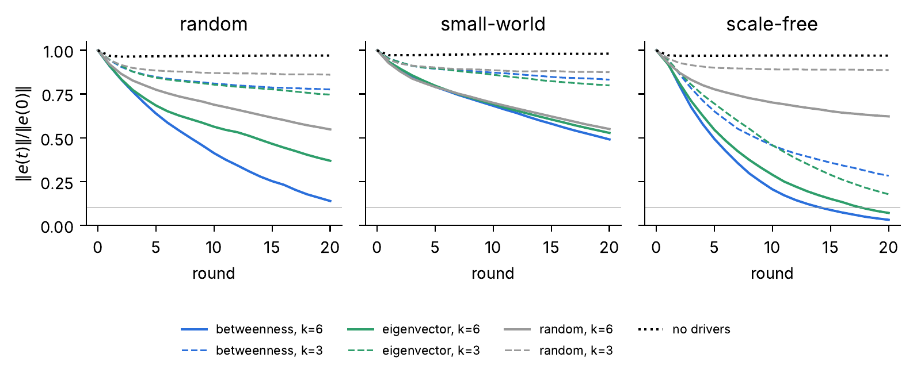
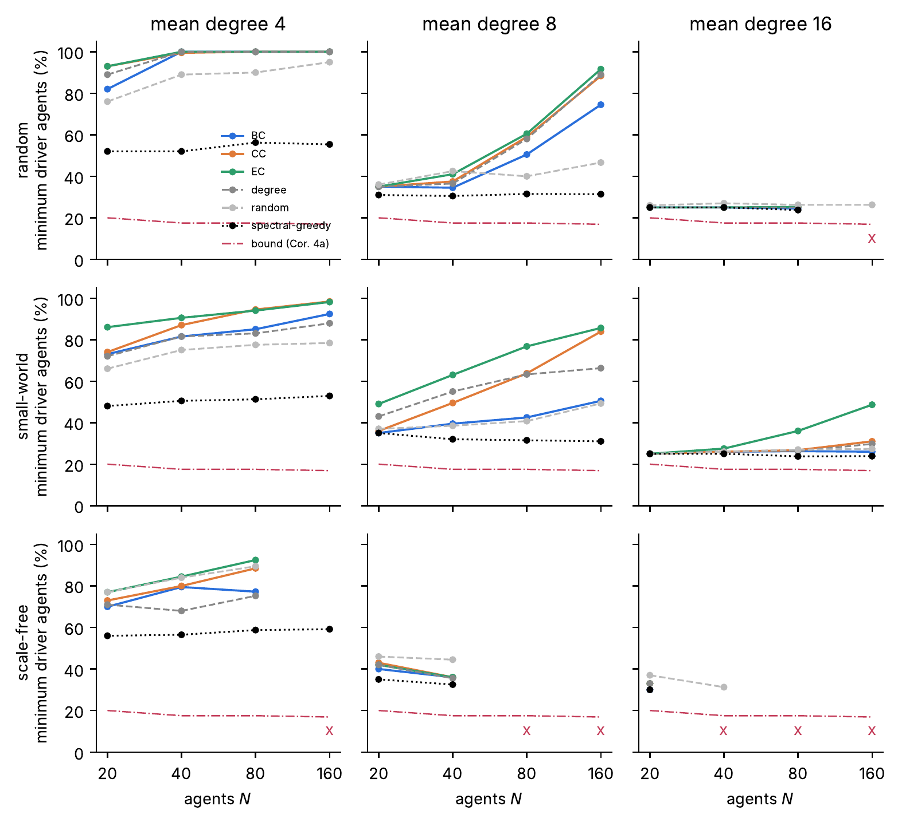
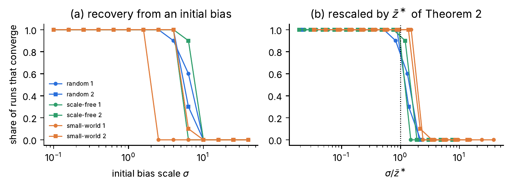
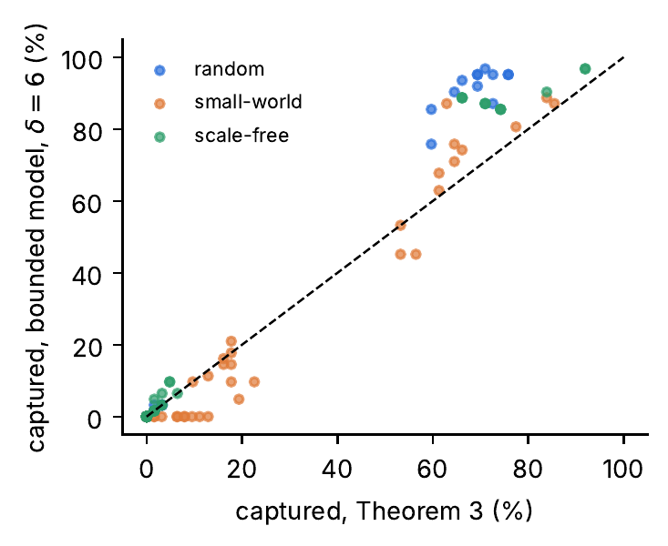
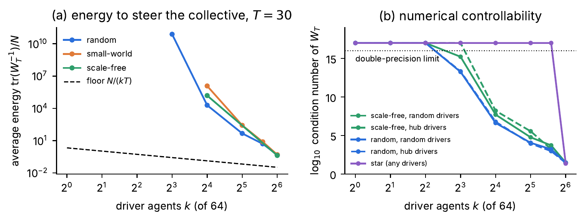

Controllability of LLM Agent Networks: Which Agents to Verify, and How Many
Abstract
Groups of large language model (LLM) agents are wired, supervised and corrected by hand-built harnesses, and verification is expensive. Which agents should receive a verifier’s correction, and how few are enough for the whole group to reach the verified answer within the rounds a harness can afford? We study this as a controllability problem for a scalar model of agent collectives, in which each agent holds a number such as the log-odds of an answer, drifts on its own, and moves toward what it reads with bounded influence.
We carry over a performance-based method developed for complex dynamical networks: choose the minimum number of driver agents that meets a desired settling time, ranking candidates by betweenness, closeness and eigenvector centrality. All theoretical results assume a correct reference. For undirected graphs and linear influence, the worst-case number of rounds to consensus follows exactly from the spectrum. This gives a lower bound on the number of driver agents and an infeasibility condition for groups whose hubs listen too much, under which pinning a hub can make the target unreachable. Under bounded influence, agents or clusters past an explicit threshold are beyond the reach of their peers, and a conservative region of attraction sets the scale of recovery.
In simulations of random, small-world and scale-free groups of 20 to 160 agents with the parameters we tested, betweenness needs the fewest or equal-fewest driver agents in 38 of the 39 feasible settings and fewer than eigenvector centrality in 121 of 126 graphs where the two differ. Within the feasible settings, denser groups need fewer drivers. State-dependent Riccati (SDRE) oversight that reads every agent but corrects few cuts the number of driver agents by a median factor of 3.75 from moderate disagreement, at about three times the corrective energy. We also treat open-loop steering and capture by compromised verifiers.
A pilot with 30 Claude Haiku 5.5 agents tests only numeric convergence and placement: a supplied correction spread through the graph, and placing verifiers by centrality lowered the final error against random placement by 13 to 17 points on a 0 to 100 scale in paired runs. It does not test reasoning or verifier reliability.
Results





Full text available on request.
Request the manuscript